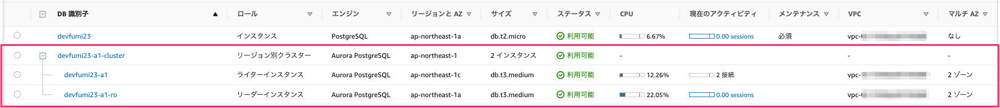
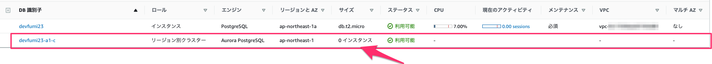

目次
Contents
AWS ドキュメントメモ
概要
-
方法は3つある
-
スナップショットを使用して RDS for PostgreSQL DB インスタンスを移行する
データは、RDS for PostgreSQL DB スナップショットから Aurora PostgreSQL DB クラスターに直接移行できます。
作成された Aurora PostgreSQL DB クラスターには、元の RDS for PostgreSQL DB インスタンスのデータが格納されます。
AWS Management Console から移行すると、中身 (データ) を移すだけじゃなく、外身 (DBクラスターと DBインスタンス) もいっしょに作ることができる
AWS CLI だと 外身 (DBクラスター, DB インスタンス) => TODO: ちょっと確認
Aurora リードレプリカを使用して RDS for PostgreSQL DB インスタンスを移行する
S3 データを Aurora PostgreSQL にインポートする
-
-
早いうちに、マイナーバージョンの自動アップグレードを無効にしておくべし
近い将来 RDS for PostgreSQL DB インスタンスを Aurora PostgreSQL DB クラスターに移行する予定がある場合は、 移行計画フェーズの早い段階で DB インスタンスのマイナーバージョンの自動アップグレードを無効にすることを強くお勧めします。 RDS for PostgreSQL バージョンが Aurora PostgreSQL でサポートされていない場合、Aurora PostgreSQL への移行が遅れる可能性があります。 Aurora PostgreSQL バージョンについては、 Amazon Aurora PostgreSQL のエンジンのバージョン を参照してください。
-
移行元の RDS for PostgreSQL のバージョンが、 Aurora PostgreSQL でサポートされていないバージョンの場合、 AWS Management Console の当該メニューが非活性になって、使えない
「スナップショットの移行」「Aurora リードレプリカの作成」メニューが非活性になっているときは、サポート外バージョンであろう
移行手順 覚書き
1. スナップショットを使用して RDS for PostgreSQL DB インスタンスを移行する
1. パラメータグループを作っておく
Aurora の場合、パラメータグループが 2種類ある
DB クラスターパラメータグループ:
timezone,lc_monetary,lc_numeric,lc_timeはこちら (lc_messagesもあった)DB パラメータグループ:
lc_messagesはこちら
Note
参考ドキュメント:
AWS ユーザーガイド: Amazon Aurora PostgreSQL のリファレンス
AWS ナレッジセンター: Amazon Aurora DB クラスターのタイムゾーンを変更するにはどうすればよいですか?
2. DB インスタンスを移行する
AWS Management Console からぽちぽちする
AWS ユーザーガイド: RDS for PostgreSQL DB インスタンスの スナップショットを Aurora PostgreSQL DB クラスターに移行する の通りでとくに迷うところはない
-
「DB インスタンス識別子」は、以下に使われる
-
DB 識別子 (DB クラスター名)
{ここで入力した DB 識別子}-clusterという名前の DB クラスターが作成された (e.g.devfumi23-a1-cluster)-
エントポイント名はこんな感じ
ライターインスタンス:
devfumi23-a1-cluster.cluster-xxxxxxxxxxxx.ap-northeast-1.rds.amazonaws.comリーダーインスタンス:
devfumi23-a1-cluster.cluster-ro-xxxxxxxxxxxx.ap-northeast-1.rds.amazonaws.com
-
DB インスタンス名
{ここで入力した DB 識別子}という名前の DB インスタンスが作成された (e.g.devfumi23-a1)エンドポイント名はこんな感じ:
devfumi23-a1.cbagdidnvhla.ap-northeast-1.rds.amazonaws.com※リーダーインスタンスもあったらどういう名前になるかはわからない
-
-
「暗号を有効化」は、このタイミングでないとできない (あとから変更できない) ので注意
移行元スナップショットが 「暗号化: 有効でない」であっても、移行先にはここで「暗号を有効化」にできる
結果イメージ
-
DB クラスターはすぐできあがったが、DBインスタンスの作成はだいぶ時間かかる
スナップショットは、Djangoチュートリアルその2くらいの状態でレコードもほとんどなかったんだけれど、3時間くらいかかった気がする。
ぽちぽち中に指定できた
DB クラスターパラメータグループ,DB パラメータグループ,VPC セキュリティグループ,サブネットグループなどなどもちゃんとくっついたマスターユーザー名,マスターパスワード,DB名はスナップショットから引き継がれた-
移行元スナップショットが 「マルチ AZ: なし」の場合、「ライターインスタンス」のみが作成される
-
=> あとから「リーダーインスタンス」を追加する場合は、「データベース」 > 「当該クラスター」 > 「アクション」 > 「リーダーの追加」でできる
「DB インスタンス識別子」は好きにつけられた
その他新しく DBインスタンス作るときと同じ感じのものがだいたいは指定できる感じだった
リーダーの追加は、何時間もかからなかった。すぐできた。
-
「リーダーインスタンス」追加後の様子

-
-
エンドポイント: Aurora にはクラスターのエンドポイントと、DB インスタンスのエンドポイントがある
どっちからでも RDS と同じように DB 接続できる
-
ライター・リーダー両方ある場合:
-
クラスターのエンドポイント:
ライターインスタンス: 書き込み・読み取り両方可
-
リーダーインスタンス: 読み取りのみ
試しに UPDATE かけてみたら、 [25006] ERROR: cannot execute UPDATE in a read-only transaction
-
インスタンスのエンドポイント: クラスターのエンドポイントと同様に
ライターインスタンス: 書き込み・読み取り両方可
リーダーインスタンス: 読み取りのみ
-
-
ライター しかない場合:
-
クラスターのエンドポイント:
ライターインスタンス: 書き込み・読み取り両方可
リーダーインスタンス: 書き込み・読み取り両方可
-
インスタンスのエンドポイント:
ライターインスタンス: 書き込み・読み取り両方可
リーダーインスタンス: -
-
-
AWS ユーザーガイド: Amazon Aurora DB クラスターへの接続
-
クラスターエンドポイント: DB クラスターのプライマリインスタンスに接続
クラスターエンドポイントを使用して、読み取りと書き込みの両方のオペレーションを実行できる
クラスターエンドポイントは常にプライマリインスタンスをポイントします。
プライマリインスタンスが失敗し、置き換えられると、クラスターエンドポイントは新しいプライマリインスタンスをポイントします。
-
DB インスタンスエンドポイント: クラスターの特定の DB インスタンスに直接接続できる
それぞれ、クラスターエンドポイントとは別に一意のエンドポイントを持つ
-
AWS Management Console の、「スナップショットの移行」が非活性の場合
AWS CLI の restore-db-cluster-from-snapshot を使って移行できるもよう
と思ったら、
restore-db-cluster-from-snapshotはクラスターしか作ってくれないらしい (中の DBインスタンスは移行してくれないらしい)だから、AWS のガイドにも AWS CLI の例が載っていなかったのかも...??
=> 一応やってみたが、たしかに DBインスタンスは復元されない
試したバージョン: PostgreSQL 11.12、Aurora PostgreSQL リリース 3.6
-
コマンド例
# RDS のスナップショットから Aurora DB クラスター を復元 $ aws rds restore-db-cluster-from-snapshot \ --db-cluster-identifier devfumi23-a1-c \ --snapshot-identifier arn:aws:rds:ap-northeast-1:xxxxxxxxxxxx:snapshot:devfumi23-s1 \ --engine aurora-postgresql \ --engine-version 11.12 \ --db-subnet-group-name dev-fumi23-db-subnet-gr-pv \ --vpc-security-group-ids sg-xxxxxxxxxxxxxxxxx \ --enable-cloudwatch-logs-exports postgresql \ --db-cluster-parameter-group-name devfumi23-aurora-postgres11-c \ --no-deletion-protection \ --copy-tags-to-snapshot
-
結果イメージ
エンドポイントは払い出された
DB クラスターのパラメータグループもちゃんとくっついた
マスターユーザー名,マスターパスワードはスナップショットから引き継がれたもよう-
TODO: create-db-instance もやってみよ...
もしかして、クラスターはスナップショットから作るので、 create-db-instance すると中身が出来上がったりして.....??
Note
[参考ドキュメント]